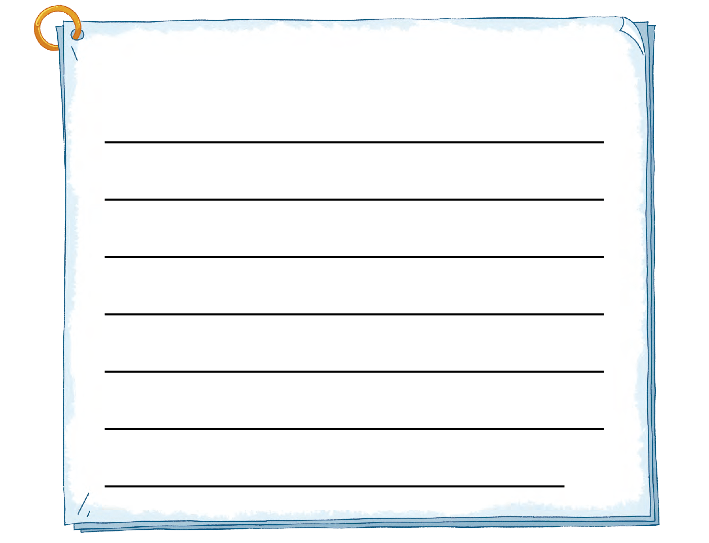
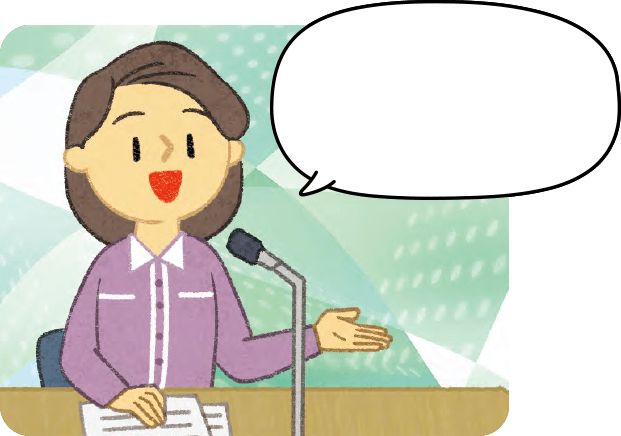
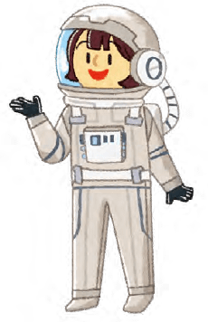

-
제목:뵤뵤 행성을
탐사할 때 있었던 일을
이야기해 주세요.지금까지 쓴
임무 카드의 일지를
참고해서 써 보세요.
제목: 뵤뵤 행성 탐사 중 있었던 일
뵤뵤 행성을 가던 중 연료가 부족해 대한민국 1호기에서 뵤뵤 행성까지의 거리와 주변 우주 정거장까지의 거리를 알아보았고 큰 수의 크기를 비교하여 연료를 채우러 갈 수 있는 우주 정거장 3에서 연료를 채우고 뵤뵤 행성에 드디어 도착했습니다.
도착해서는 막대그래프로 정리된 뵤뵤 행성과 지구의 자원 매장량을 비교하였고 평면도형의 이동을 이용해 자원 탐사 로봇에 이동 명령을 내려 행성을 탐사했습니다.
드디어 지구로 돌아가는 날 지구로 돌아갈 길을 먼저 파악하였고 가는 길에 장애물을 피하기 위해 우주선의 각도를 바꾸는 훈련을 했습니다.
지구로 돌아가기까지 984시간이 남았을 때 나눗셈을 이용해 984시간은 41일이라는 것을 알아내었고 음식이 부족하지 않게 하루에 얼마나 먹을지 계획을 세웠습니다. 다행히도 예정된 날짜로 지구로 도착했고 음식도 알맞게 먹었습니다.